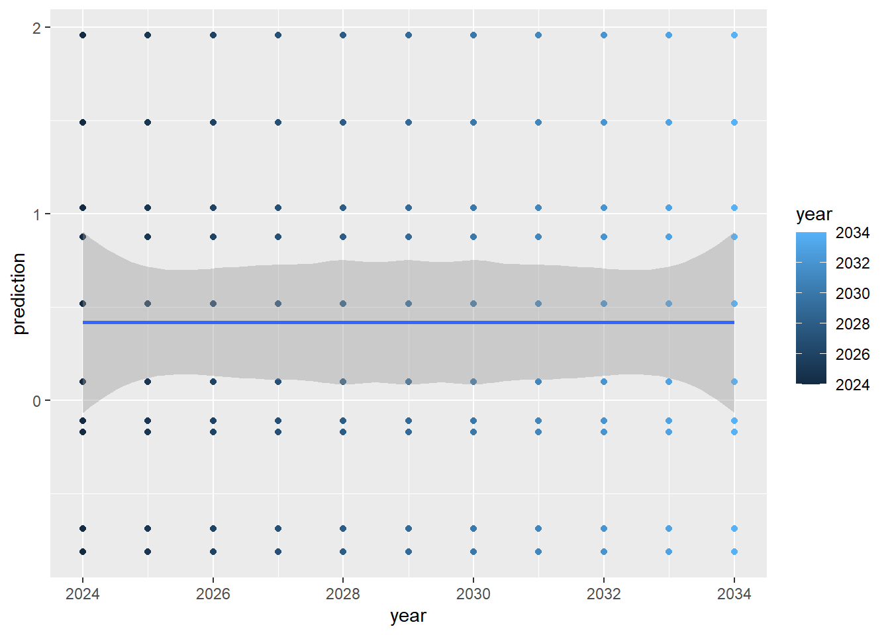

Here, we will talk about scheduling events in a SpaDES module using a function called SpaDES.core ::scheduleEvents(). Please see Chapter 4 for how to create a simple module and Chapter 8 for an overview of what events are before attempting this section.
Repeated? When?
When starting to build a module or an event, we ask 2 key questions:
1. Do I need to repeat this operation?
2. If yes, how often and/or when?
Once we answer these, we can use the function scheduleEvents to set them up in whatever sequence we want.
Scheduling events allows us to control when things happen in a sequence. This can be as simple as “this module will just do one thing” to “this module will do several things, some of which repeat”.
Below, we will use a simple example where there is one thing that happens once and one thing that happens several times. In “normal” R-speak, we will write a loop.
We return to the example in Chapter 4, but this time, we will add a predict step from the linear model, with updated values of the y. In this simple example, we will pretend that each prediction is “one year into the future” and that our y will slowly get bigger.
Code
# .inputObjects #####x <-rnorm(10)# Init #####y <- x +rnorm(10)# fit a linear modelout <-lm(y ~ x)pred <-list()# Prediction #####startYear <-2023years <- startYear:(startYear +10) +1for (year in years - startYear) { pred[[year]] <-predict(out, newdata =data.frame(y =rnorm(10) + year))}# Plot #####predictions <-data.frame(year =rep(years, each =10), prediction =unlist(pred))# plot the predictionsggplot(predictions, aes(x = year, y = prediction, colour = year)) +geom_point() +geom_smooth()

9.1 Convert to a module
In the above code, there are 4 sections. These will each be copied into the SpaDES module below, in their respective sections. We have added 1 new section, called “Prediction”.
Open the module file, which will be printed in the console. Scroll down to the Init function and copy the Init, the .inputObjects(), and the Plot parts in the code above into the new module, as we did in Chapter 4.
We must make the same decisions about “local objects” (objects that are OK not to be kept for later) and about “global objects” (those that we want to keep). These global objects get put into sim. Your new module should have these 3 new sections/functions:
Code
Init <-function(sim) { y <- sim$x +rnorm(10)# fit a linear model sim$out <-lm(y ~ sim$x) sim$pred <-list()return(invisible(sim))}plotFun <-function(sim) { sim$predictions <-data.frame(year =rep(sim$years, each =10), prediction =unlist(sim$pred))# plot the predictions sim$gg <-ggplot(sim$predictions, aes(x = year, y = prediction, colour = year)) +geom_point() +geom_smooth()print(sim$gg)return(invisible(sim))}.inputObjects <-function(sim) { sim$x <-rnorm(10)return(invisible(sim))}
9.1.1 Update module metadata
Like in Chapter 5, we also have to update the module metadata… what the inputs, outputs, parameters are. SpaDES will not error if the metadata are not correct, but it will try to point out the problems.
Here’s an example:
Code
createsOutput(objectName ="predictions", objectClass ="data.frame", desc ="Table of predictions and years")
Make sure the inputs (x) and all outputs (predictions, gg, pred and out) are all declared.
9.2 New Event Function – Prediction
The new part is the for loop. This part takes new covariates (new values for y), emulating “predicted” covariates, and derives a newly predicted x, which we then keep as the predictedx values each year.
We’ll use scheduleEvent() below to do this iteration. For now, copy the Prediction part into a new function:
Note the new output years, which should also be added to the metadata.
9.3 Scheduling
Now we need to tell SpaDES when to execute and when to iterate each of the steps or “events”. The init we do once, at the start. The .inputObjects always only happens once and “before the start” (init) – it is scheduled automatically so nothing to do here. The last part (i.e., the prediction event) must happen 10 times, and it must start after init and before the plot. The plot we do once.
9.3.1doEvent.*() and scheduleEvent()
There is a special function defined in a SpaDES module called doEvent.*() (it usually is appended with the module name: doEvent.<module_name>()). SpaDES calls this function several times and executes it’s code depending on the values of the eventTime and eventType arguments.
By default the only mandatory event executed by spades is the init1, unless we specifically tell it to do more, using the SpaDES.core::scheduleEvent() function and declaring more values for the event argument (i.e. more events).
Order of event code (not to confuse with event execution)
Events do not have to be defined in any particular order in the doEvent.<module_name>() function, as their order of execution is solely determined by scheduling (scheduleEvent()) or, for some events, imposed by simInit() and spades() (e.g., .inputObjects() and init are always executed first).
Similarly, the order in which functions used by events appear in the module R script is arbitrary.
scheduleEvent() is the “scheduler” function. Using the arguments eventTime and eventType, we define when and what event to schedule, respectively. eventPriority can be specified to determine which event should occur first, when two are scheduled for the same time2. Finally, moduleName and sim always have to be passed.
We place scheduleEvent() anywhere we want inside each event’s code in doEvent.*(). In this example, we will place it in a few places:
9.3.1.1 In the init event
We look at the init event (code inside event = "init") and we see 2 scheduleEvent calls that come with the template. We will use those to learn. In each “event”, we often see one part that “does something” and another part that “schedules something”.
In the default template, we “do” the Init function and we schedule plot and save. We can delete the save event, as we won’t do that here. But we will replace it with “schedule prediction”.
sim <-Init(sim)# schedule future event(s)sim <-scheduleEvent(sim, P(sim)$.plotInitialTime, "scheduling", "plot")# here we create a new event type == "predictions" and we schedule it for `start(sim)`sim <-scheduleEvent(sim, start(sim), "scheduling", "predictions")
Copy the above code chunk to the init section so that it looks like this:
Code
switch( eventType,init = { sim <-Init(sim)# schedule future event(s) sim <-scheduleEvent(sim, P(sim)$.plotInitialTime, "scheduling", "plot")# here we create a new event type == "predictions" and we schedule it for `start(sim)` sim <-scheduleEvent(sim, start(sim), "scheduling", "predictions") }, ...)
Match scheduleEvent() arguments to event names
The name of an event is defined as argument values for doEvent.<module_name>(..., eventType):
Code
doEvent.scheduling =function(sim, eventTime, eventType) {switch( eventType,init = { # <----- "init" is the eventType/name<...> },predictions = { # <----- "predictions" is another eventType/name<...> },warning(noEventWarning(sim)) )return(invisible(sim))}
It must match what is provided to scheduleEvent(..., eventType).
9.3.2 The new events
We will add code to make two new events, called "predictions" and "plot" (the name must match what we wrote in the scheduleEvent() above). In these events, we “do” the prediction, schedule the next prediction at “time plus 1”, and plot.
See ?SpaDES.core::times().
Time in SpaDES
It is useful to understand time in SpaDES. Time has units (e.g., “year”) which is defined by the modules metadata timeunit. So, if time(sim) is 1 or 2024, that would be in year units, if the module is in year. To know what “time” it is in a module, the easiest function is time(sim). That will give you the “time”.
Time, in SpaDES, is a way of ordering events. If one event happens at time 2024, and another event happens at 2025, then the 2024 event will happen first.
The other two useful functions are start(sim) and end(sim), which will give you the starting time of the spades call and ending time respectfully. These would have been specified in simInit.
Code
switch( eventType,init = {...},predictions = {# do the Prediction sim <-Prediction(sim)# schedule the next Prediction sim <-scheduleEvent(sim, time(sim) +1, "scheduling", "predictions") },plot = {# do the plot sim <-plotFun(sim) }, ...)
Because the "predictions" event schedules itself we will have to adapt the Prediction() function, as the for-loop is no longer necessary:
This would schedule 3 predictions, during the next three “time steps”. This may be very clear, but it would be difficult to do this for dozens of years (could be done with a for-loop).
A “bottom up” approach is to schedule the predictions event once during init, then each time that predictions event occurs, reschedule it:
Each time the predictions event happens, it will reschedule itself forever! Very simple. The workflow sequence emerges from the self-scheduling.
9.3.3 Double check existing events
If we ran the above changes, we would see an error because plotFun was scheduled to run at the time that is specified by .plotInitialTime, which by default is start(sim). We have no data yet at that time. So, we will choose to schedule plotFun to run at end(sim):
A complete version of this new module can be found at scheduling.R. You can copy this over top of the new module that you created here, i.e., keep the same folder structure.
9.5 Questions
how are some ways that scheduleEvent is different from a “loop”?
We can change the “step” length between events.
We can interweave events, e.g., a fire event then a tree growth event
When is a loop better than scheduling?
Loops are much faster than scheduling.
But really, avoid loops in R if you can help it
Chances are that the first versions of this module didn’t work. How do you fix it?
Undefined event type. This is a warning, rather than an error, that is issued when an event is being scheduled with scheduleEvent(), but has not been defined in doEvent.<module_name>(). Check spelling and make sure all scheduled events appear in doEvent.<module_name>().
Event not being scheduled/executed. If an event doesn’t appear printed in spades() messages during workflow execution or in the event queues shown by events() or completed(), double check:
whether the first occurrence of the event is being scheduled by the init event;
if the chosen time for the first occurrence is correct;
whether the event is rescheduling itself appropriately;
whether the name of the event and module are spelled correctly in scheduleEvent();
whether the event has been defined in doEvent.<module_name>().